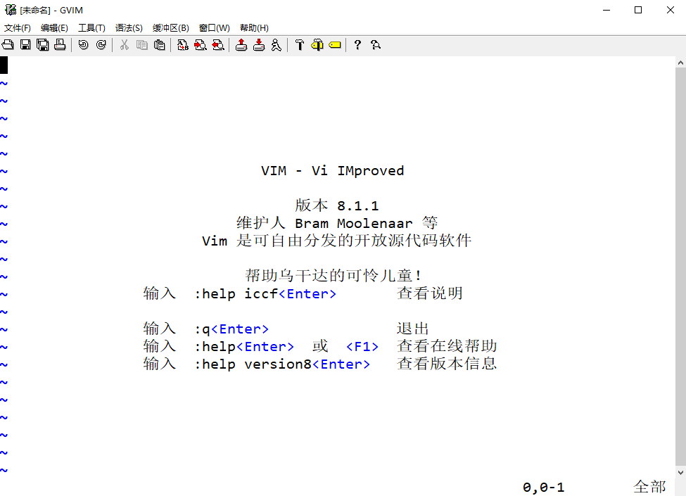
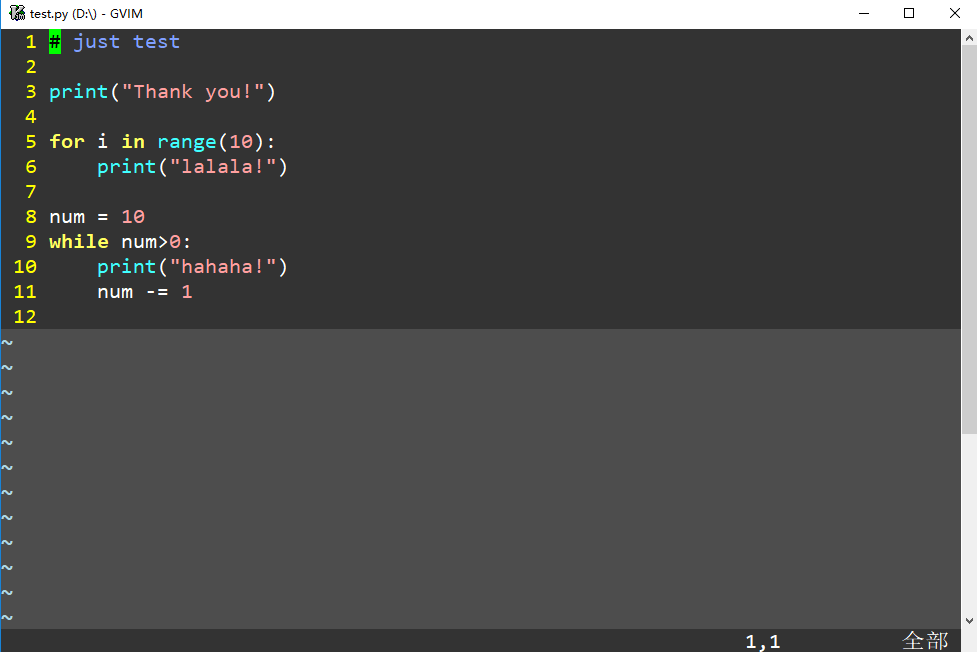

简洁流配置
- 简单配置
1. 参数与说明
1.1 参数
- 环境：Win10
- 软件版本：gVim8.1.1
1.2 说明
- 安装目的：方便我的旧电脑快速打开一些小文件
- 配置目标：简洁，有些基本功能就行
2. 配置
2.1 前后效果
2.1.1 配置前

2.1.2 配置后
- 主要就是“隐藏了顶部栏目”和“更改了配色”

2.2 编辑 _vimrc
2.2.1 找到 _vimrc 文本
- 我把软件装在 E:\Program Files (x86)\Vim，_vimrc 就在这个目录例
- 安全起见，可以先复制一个副本
2.2.2 选择配色
- gVim 8.1.1 自带 18 种配色方案，我一开始选了 evening
- 对应代码：
colorsheme evening - 注意事项
- Windows 下装好软件后，_vimrc 里面大概率是有代码的，把配置加到开头即可
"为注释符号
2.2.3 隐藏栏目
隐藏菜单栏
-
代码：
set guioptions-=m -
注意：
-=前后不要加空格，下方的=前后也不要加
隐藏工具栏
- 代码：
set guioptions-=T
3. 为 Python 再配几条命令
3.1 显示行号
- 以下两种均可
set numberset nu
3.2 统一缩进数为 4
set fofttabstop=4
set shiftwidth=4
3.3 设置 Tab 键为 4 个空格
set tabstop=4
3.4 让空格代替 Tab
set expandtab
3.5 启动语法高亮
syntax on
3.6 设置字体
set guifont=Consolas:h16- 字体样式：Consolas
- 字体大小：16 号
补充
- Linux 下的设置略有不同
set guifont=consolas\ 16- 16 前的空格不要省
- 如果需要设置多个字体，可以在各个字体之间添加逗号
set guifont=Consolas:h16,Courier_New:h14- Vim 会从前往后选择字体，比如：第一款没找到，就用第二款，以此类推
- 偷懒写法：
set guifont=* - 可以对特定的文件类型使用特定的字体
autocmd BufEnter *.txt set guifont=Arial:h14- 上面这句意为：所有的
txt文件使用 14 号Arial字体
- guifont 的其他参数
set guifont=Consolas:h16:cGB2312:qDRAFT- 设置字体=字体类型:字体大小:字符集:字体质量
3.7 设置编码格式
set encoding=utf-8
3.8 设置快速运行快捷键
map <F5> :!python %
3.9 最终效果

4. 后记
- 以上已经满足我目前的需求
- 若要继续配，可以在 GitHub 上搜索大神的配置作为参考
- neovim 貌似也挺火的
4.1 关于乱码
- 若配置了 utf-8 的编码格式，“菜单栏”会乱码
- 解决方法
- 没有隐藏“菜单栏”——治标不治本
-
在 _vimrc 里加两句
source $VIMRUNTIME/delmemu.vim
source $VIMRUNTIME/menu.vim
4.2 关于更改配色
- 若不满足于自带的配色方案，可以上 GitHub 上搜索
- 比如
- 搜索
molokai - 复制 Code
- 在
安装目录\vim81\colos下新建文本、粘贴 Code、保存为molokai.vim - 在 _vimrc 里更改配色方案：
colorscheme molokai
- 搜索
4.3 本文的配置汇总
" 1. 设置配色方案
" colorscheme evening
colorscheme molokai
" 2.1 隐藏菜单栏
set guioptions-=m
" 2.2 隐藏工具栏
set guioptions-=T
" 3. 显示行号
set number
" 4. 统一缩进数为 4
set softtabstop=4
set shiftwidth=4
" 5. 设置 Tab 键为 4 个空格
set tabstop=4
" 6. 让空格代替 Tab
set expandtab
" 7. 启动语法高亮
syntax on
" 8. 设置字体
set guifont=Consolas:h16
" 9. 设置编码格式
set encoding=utf-8
" 10. 设置快速运行快捷键
map <F5> :!python %
" 11. 备用，防止乱码
source $VIMRUNTIME/delmenu.vim
source $VIMRUNTIME/menu.vim
" 下面是原来的 Code